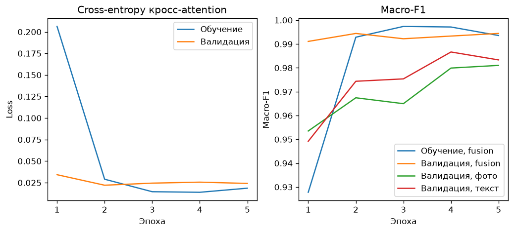
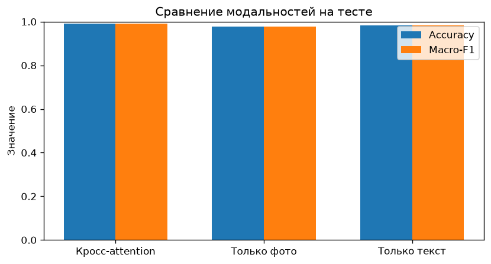
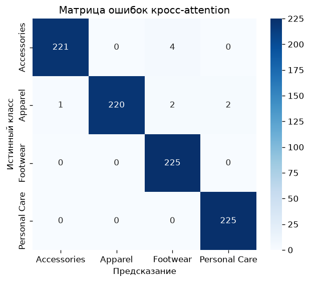
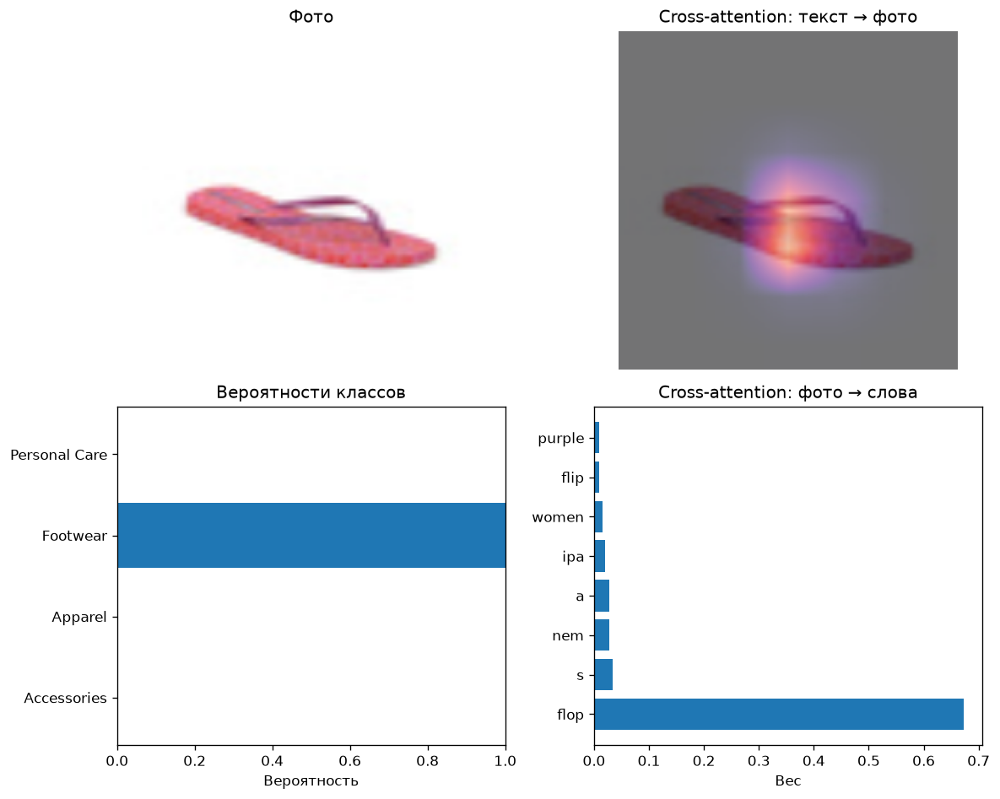
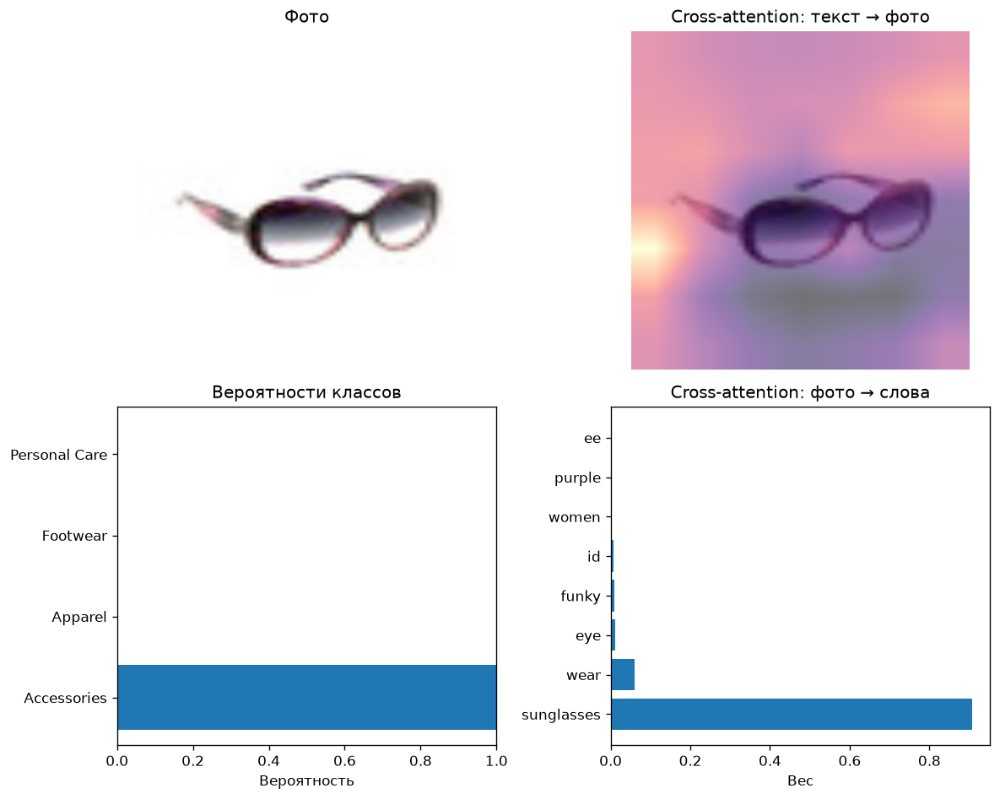
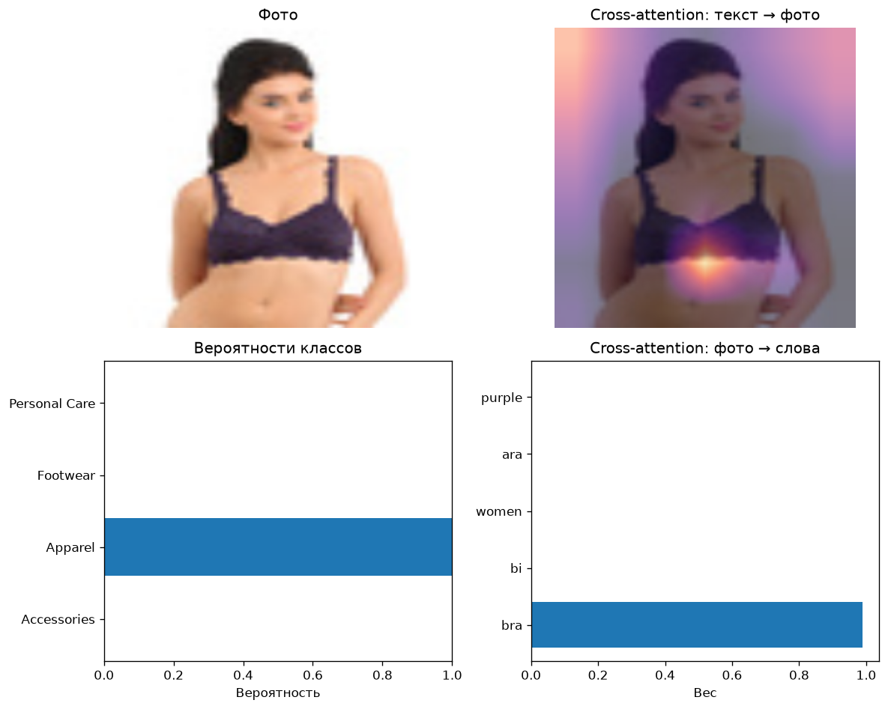
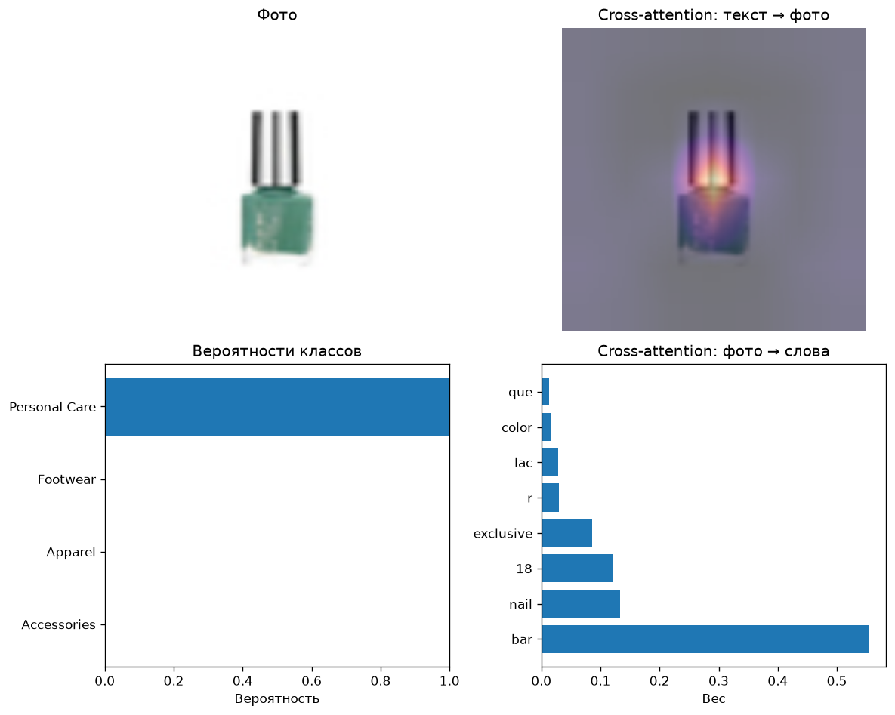
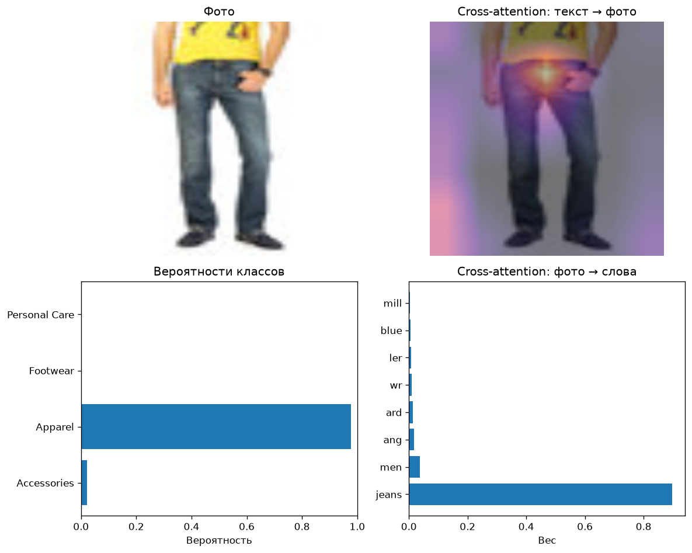
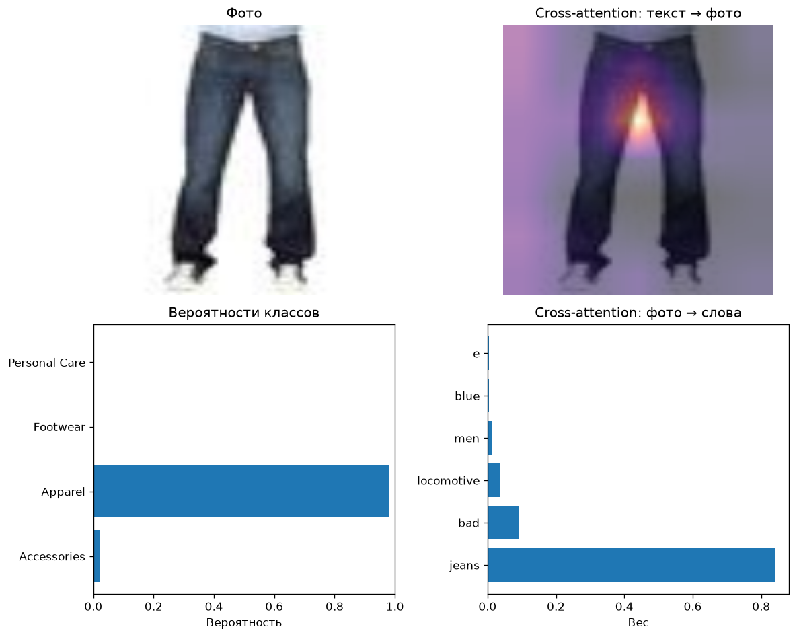

Датасет ashraq/fashion-product-images-small. Цель — masterCategory.
На класс не больше 1500 примеров.
Размеры сплитов: train 4200, val 900, test 900.
| Класс | Примеров в ограниченной выборке |
|---|---|
| Accessories | 1500 |
| Apparel | 1500 |
| Footwear | 1500 |
| Personal Care | 1500 |
Исходные фотографии в датасете — миниатюры около 60 px. Перед энкодером они приводятся к 224 px, карта cross-attention имеет размер 7×7.
Фото и текст объединяются двунаправленным cross-attention. Запросы изображения читают ключи и значения текста, запросы текста читают ключи и значения изображения. В классификатор попадают уже обновлённые токены. Строки «Только фото» и «Только текст» — отдельные головы без смешивания модальностей.
| Модель | Accuracy | Macro-F1 |
|---|---|---|
| Кросс-attention | 0.990 | 0.990 |
| Только фото | 0.978 | 0.978 |
| Только текст | 0.982 | 0.982 |
| Класс | Precision | Recall | F1 | Support |
|---|---|---|---|---|
| Accessories | 0.995 | 0.982 | 0.989 | 225 |
| Apparel | 1.000 | 0.978 | 0.989 | 225 |
| Footwear | 0.974 | 1.000 | 0.987 | 225 |
| Personal Care | 0.991 | 1.000 | 0.996 | 225 |
| Класс | Precision | Recall | F1 | Support |
|---|---|---|---|---|
| Accessories | 0.973 | 0.947 | 0.959 | 225 |
| Apparel | 0.991 | 0.978 | 0.984 | 225 |
| Footwear | 0.970 | 1.000 | 0.985 | 225 |
| Personal Care | 0.978 | 0.987 | 0.982 | 225 |
| Класс | Precision | Recall | F1 | Support |
|---|---|---|---|---|
| Accessories | 0.978 | 0.969 | 0.973 | 225 |
| Apparel | 0.982 | 0.978 | 0.980 | 225 |
| Footwear | 0.978 | 0.987 | 0.982 | 225 |
| Personal Care | 0.991 | 0.996 | 0.993 | 225 |
| Истинный \ предсказание | Accessories | Apparel | Footwear | Personal Care |
|---|---|---|---|---|
| Accessories | 221 | 0 | 4 | 0 |
| Apparel | 1 | 220 | 2 | 2 |
| Footwear | 0 | 0 | 225 | 0 |
| Personal Care | 0 | 0 | 0 | 225 |



Текст: iPanema Women Purple Flip Flops
Истинный класс: Footwear
Предсказание: Footwear
Вероятности: Accessories 0.000, Apparel 0.000, Footwear 1.000, Personal Care 0.000

Текст: Idee Women Funky Eyewear Purple Sunglasses
Истинный класс: Accessories
Предсказание: Accessories
Вероятности: Accessories 1.000, Apparel 0.000, Footwear 0.000, Personal Care 0.000

Текст: Biara Women Purple Bra
Истинный класс: Apparel
Предсказание: Apparel
Вероятности: Accessories 0.000, Apparel 0.999, Footwear 0.000, Personal Care 0.000

Текст: Colorbar Exclusive Nail Lacquer 18
Истинный класс: Personal Care
Предсказание: Personal Care
Вероятности: Accessories 0.000, Apparel 0.000, Footwear 0.000, Personal Care 1.000

Текст: Wrangler Men Blue Millard Jeans
Истинный класс: Apparel
Предсказание: Apparel
Вероятности: Accessories 0.021, Apparel 0.977, Footwear 0.002, Personal Care 0.000

Текст: Locomotive Men Bade Blue Jeans
Истинный класс: Apparel
Предсказание: Apparel
Вероятности: Accessories 0.021, Apparel 0.979, Footwear 0.000, Personal Care 0.000
